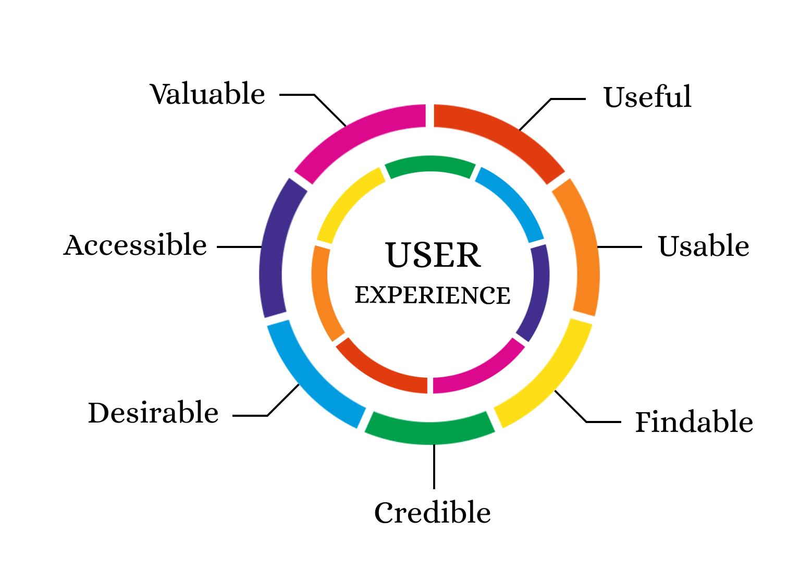

I am Olivia Malvar
I'm interested in technology
Introduce Yourself
Hi! My name is Olivia Malvar, but a lot of my friends call me Liv. I am currently a junior in the School of Computing and Information pursuing a Bachelor's degree in Information Science and Digital Narrative & Interactive Design. I have a deep interest in UX/UI design and front-end development. Most of my courses this semester focus on these areas, as I believe it will be helpful for when I intern with PNC this summer as part of their digital design team! I am a brother of Kappa Theta Pi which is Pitt's co-ed professional technology fraternity and a sister of social sorority Sigma Delta Tau.
Field of Study
I have always been interested in computers, even when I was young. I knew I wanted to pursue a career in technology and up until recently, I have struggled to figure out what that would look like. After taking various courses in information science, I finally realized where my passion lies: UX/UI design and front-end development. I am excited to learn more about this field in my classes.
Why UX Design and Usability Testing? Where do you see yourself within this nexus of UX design and product development?
Before coming to college, I never realized how much thought actually went into designing products for users to have a pleasant experience. After learning such, I was fascinated by the entire process. Along with this class, I am also taking UX Engineering and Web Design this semester. I am interested to learn how UX design within product development differs from UX within user interfaces.

Where do you want your knowledge and skills to take you?
After graduation, I am looking to pursue a career in UX/UI and front-end development. First and foremost, this career is important to me because I am passionate about it. I believe that if you are not passionate about what you do, you will not be successful. Happiness is key. Besides that, I understand how frustrating it is to navigate a poorly designed website. I would love to showcase my creativity by designing websites that are efficient for users.

Why make a spark when you can light a fire?